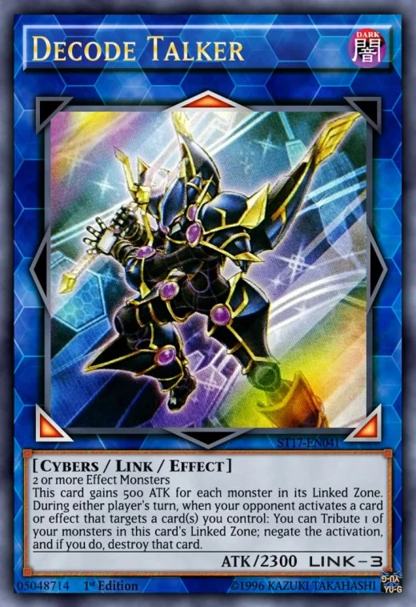
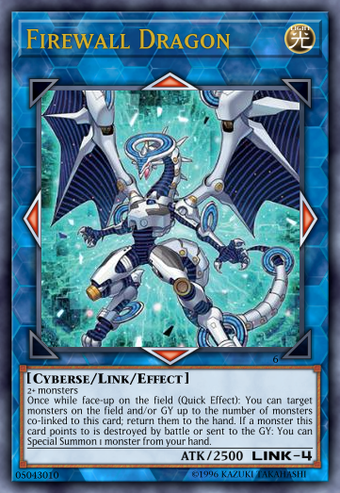
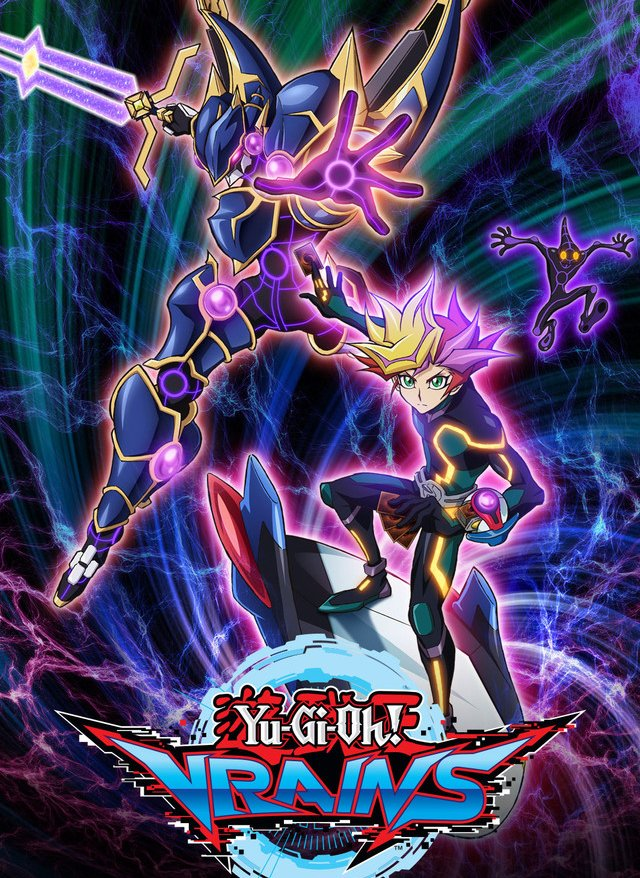
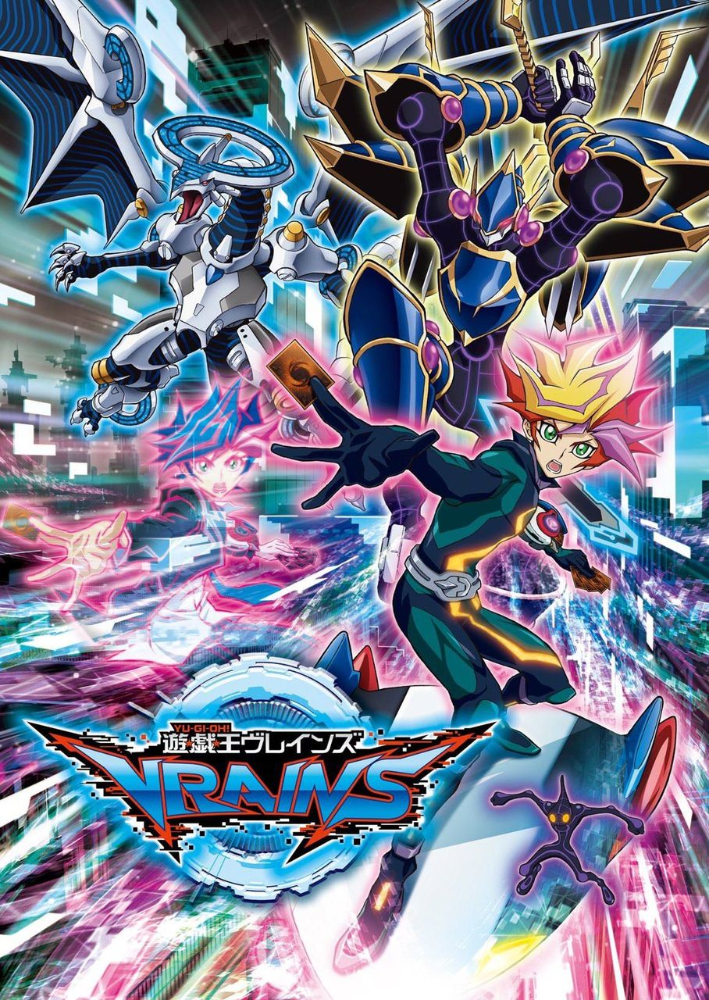

| description | Fusion Summon | Synchro Summon | Xyz Summon | Pendulum Summon | Link Summon |
|---|
A Link Monster (Japanese: リンクモンスター Rinku Monsutā) is a type of Monster Card. The color of their card frame is dark blue, which is similar to that of a Ritual Monster, but with a hexagonal pattern similar to a honeycomb structure. These cards are placed in the Extra Deck.
Like other Extra Deck monsters, Link Monsters cannot exist in either the hand or the Main Deck (even with card effects). If a Link Monster would be moved to the hand or Main Deck, it is returned to the Extra Deck instead. If a card like "Transmigration Break" or "Degenerate Circuit" is applying, the Link Monster would be banished rather than returning to the Extra Deck.
If a Link Monster is not Link Summoned first, it cannot be Special Summoned from the Graveyard or while banished (unless it specifies another way to properly Special Summon it).
Link Monsters have a Link Rating in place of a Level or Rank. A Link Monster's Link Rating determines the total number of Link Materials required to Link Summon it. A Link Monster's Link Rating is also equal to the number of Link Arrows it has. A Link Monster's Link Rating can be found next to its ATK, in place of the traditional DEF value.
Link Monsters do not possess Levels or Ranks, therefore they cannot be used as material for a Ritual, Synchro, or Xyz Summon. Also, Level or Rank-modifying cards such as "Harmonic Waves", "Feedback Warrior", or "Xiangsheng Magician" do not affect Link Monsters. The same thing can be said for Spells/Traps that affect Levels/Ranks such as "Gravity Bind", "Level Limit - Area B" or "Planckton".
Link Monsters can only exist in face-up Attack Position (they do not have a DEF value) and cannot be placed in or changed to Defense Position (either manually or through a card effect); this is because rotating the card into Defense Position would change the directions its Link Arrows point to. Because of this, Link Monsters are unaffected by effects that change battle positions and are unable to be placed face-down, and cannot be Summoned by an effect that would Special Summon monsters only in Defense Position (such as "Back to the Front").
Link Monsters also have Link Arrows, indicated by red arrows radiating outward from the art frame. These indicators denote which zones and monsters that Link Monster points to.
Monsters in the Extra Deck (Fusion, Synchro, Xyz, face-up Pendulum, and Link Monsters) can be Special Summoned from the Extra Deck to a Main Monster Zone a Link Monster points to. If a Link Monster points to a monster, the monsters are considered to be "linked" to each other.
A Link Summon is the act of Summoning a Link Monster from the Extra Deck using the requisite number of Link Materials listed on its Link Rating. During the Main Phase, the turn player can Link Summon by sending the face-up Link Materials from their field to the Graveyard.
Link Monsters commonly grant benefits to monsters they point to or gain more powerful effects depending on the number of monsters they point to. As such, Decks focused around Link Monsters require methods to quickly Summon monsters in order to Summon Link Monsters as well as into the zones where the Link Monsters point to. When attempting to Summon multiple Link Monsters, it is important to decide which order to Summon them in, as their Link Arrows will dictate where the others can be Summoned and what monsters will be Linked to them.
Link Monsters with higher Link Ratings can be Special Summoned more quickly by Link Summoning multiple weaker Link Monsters first. This also helps to place them in locations that will take better advantage of their Link Arrows.
Powerful Link Monsters are typically balanced by having a higher Link Rating and forward-pointing Link Arrows, allowing the opponent to summon more Extra Deck monsters. For example, "Decode Talker", "Firewall Dragon", "Topologic Bomber Dragon" and "Encode Talker" all have Link Arrows that point towards the opponent's field when they are placed in the Extra Monster Zone, while weaker Link Monsters such as "Missus Radiant", "Gaia Saber, the Lightning Shadow" and "Link Spider" do not.
The series is based in a world roughly 10 years from now where a massive Virtual Reality Network called LINK VRAINS has been established. It’s a suspense thriller style story where Yusaku fights in order to learn the truth of events in the past.
The sixth series focuses on Yusaku Fujiki, a high-schooler and a hacker who doesn't like standing out. However, he gets drawn into encounters with people as he tries out Dueling for once.
There is a city where network systems have evolved: Den City. In this city, with the advanced network technology developed by the corporation SOL Technologies, a Virtual Reality space called LINK VRAINS (Link Virtual Reality Artificial Intelligence Network System) has been developed. By using LINK VRAINS which was built inside the Network System, Duels unfold where Duelists change their appearance separate from their real life identities, and in this VR Space people became excited over the latest way to Duel.
However, in LINK VRAINS, a mysterious hacker group that hacks via Dueling has appeared: The Knights of Hanoi. Their goal is to destroy the AI World known as Cyberse that exists somewhere in the depths of the Network.
However, there is one Duelist who stands against the threat to LINK VRAINS. His name is Playmaker. He has become famous in the Network World for crushing the Knights of Hanoi in fierce Duels, without mentioning his name. But the true identity of Playmaker is ordinary high school student Yusaku Fujiki, who pursues the Knights of Hanoi that appear in VRAINS in order to find out the truth of an incident that happened in his past.
The show's theme is "Take a step forward, and try!", on the premise that kids should start to try things out instead of just giving up at the first try due to being overwhelmed by information.